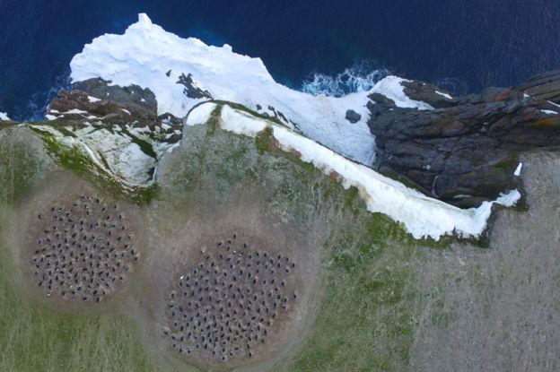

Penguin super-colony spotted from space
By Jonathan Amos and Victoria Gill


Scientists have stumbled across a huge group of previously unknown Adélie penguins on the most northerly point of the Antarctic Peninsula.
Scientists have stumbled across a huge group of previously unknown Adélie penguins on the most northerly point of the Antarctic Peninsula.

Using a deceptively simple antenna roughly the size and shape of a dinner table, radio astronomers have made an unprecedented discovery: telltale fingerprints from the earliest stars in the cosmos, pressed into the afterglow of the universe’s birth.
It’s not often that a microscopic organism gains celebrity status, but that’s exactly what tardigrades have managed to accomplish. The tiny organisms, often called “water bears” due to their stout body shapes, have gained popularity thanks to their undeniable cuteness and incredible resiliency.
Ride-hailing giants Uber and Lyft are delivering pitiful levels of take-home pay to the hundreds of thousands of US independent contractors providing their own vehicles and driving skills to deliver the core service, according to an MIT CEEPR study examining the economics of the two app platforms. The report catalyses the debate about conditions for workers on gig economy platforms.
Some 2,000 years ago, perhaps, ancient artists in the Arabian desert climbed tall rock outcrops and carved life-size camels into the stone. Now, archaeologists exploring a site in northwest Saudi Arabia have discovered about a dozen of the humped sculptures. Although camel art has been found in other parts of the Arabian Peninsula, the newly uncovered engravings at the so-called “Camel Site” are stylistically unique. The findings, which were reported Tuesday, could help provide insight into the history and development of rock art on the Arabian Peninsula.

Wildlife World Zoo, Aquarium & Safari Park welcomes a newborn reticulated giraffe to the Family! Baby Austin made his debut into the world on Feb. 18, 2018. At just a few days old, this precious calf is already standing over 6 feet tall! Austin was born strong and healthy. He and his mother are doing great and will be on display each day at the giraffe exhibit. Female giraffes have a gestation of up to 15 months, one of the longest gestations in the animal kingdom. "The calf is thriving under the close watch of his attentive mother.

Nintendo's latest Nintendo Direct presentation brought a great deal of news. The company had only promised new details on its upcoming Mario-themed sports game, Mario Tennis Aces, but it delivered much more. The March 2018 event brought word on new 3DS games, which include a Luigi's Mansion remake, a port of Captain Toad, and a WarioWare "Best Of" collection. If you're eager to watch the presentation yourself, you can watch it in its entirety below.

Today is Mario Day, a day celebrating video gaming's most famous plumber. That's because today is March 10th which you can abbreviate to MAR 10 which, if you look closely, spells Mar10 or Mario, basically. To usher in this auspicious occasion, Nintendo has partnered up with Google to add Mario Time to Google Maps (It's Mario time!) This might have something to do with the upcoming mobile version of Mario Kart, or it might just be a fun promotion.

BURNABY, British Columbia (AP) — Thousands of demonstrators marched Saturday to speak out against a pipeline expansion project that would nearly triple the flow of oil from Canada's tar sands to the Pacific Coast. Indigenous leaders led the march in the Vancouver suburb of Burnaby after telling the crowd that the day's event was a celebration of unity, but they should be prepared in the future to "cross the line" with potential arrests.

Scientists have found a new type of water known as Ice-VII from diamonds deep in the Earth's crust. This type of ice is about 1.5 times as dense as what we're used to (Ice I), with a different atomic composition similar to what's most commonly found on ice moons orbiting Jupiter or Saturn. As the name implies, there are several types of ice that distinguish our common variety of frozen water from Ice-VII, each more dense than the last. Ice-VII has been compressed, with oxygen atoms in a cubic structure as opposed to the hexagonal structure of Ice-I.